공인노무사-1차(경영학개론) (2024-05-25 기출문제)
1과목: 경영학개론
1. 다음 채권의 듀레이션은? (단, 소수점 셋째 자리에서 반올림한다.)
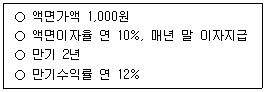
- 1.75년
- 1.83년
- 1.87년
- 1.91년
- 2.00년
(정답률: 7%)
2. 준비비용이 일정하다고 가정하는 경제적 주문량(EOQ)과는 달리 준비비용을 최대한 줄이고자 하는 시스템은?
- 유연생산시스템(FMS)
- 자재소요관리시스템(MRP)
- 컴퓨터통합생산시스템(CIM)
- ABC 재고관리시스템
- 적시생산시스템(JIT)
(정답률: 47%)
3. 효과적인 시장세분화가 되기 위한 조건으로 옳지 않은 것은?
- 세분화를 위해 사용되는 변수들이 측정가능해야 한다.
- 세분시장에 속하는 고객들에게 효과적이고 효율적으로 접근할 수 있어야 한다.
- 세분시장 내 고객들과 기업의 적합성은 가능한 낮아야 한다.
- 같은 세분시장에 속한 고객들끼리는 최대한 비슷해야 하고 서로 다른 세분시장에 속한 고객들 간에는 이질성이 있어야 한다.
- 세분시장의 규모는 마케팅활동으로 이익이 날 수 있을 정도로 충분히 커야 한다.
(정답률: 60%)
4. 다음 특성에 부합하는 직무평가 방법으로 옳은 것은?
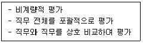
- 서열법
- 등급법
- 점수법
- 분류법
- 요소비교법
(정답률: 54%)
5. 유형자산의 감가상각에 관한 설명으로 옳은 것은?
- 감가상각누계액은 내용연수 동안 비용처리 할 감가상각비의 총액이다.
- 정액법과 정률법에서는 감가대상금액을 기초로 감가상각비를 산정한다.
- 정률법은 내용연수 후반부로 갈수록 감가상각비를 많이 인식한다.
- 회계적 관점에서 감가상각은 자산의 평가과정이라기 보다 원가배분과정이라고 할 수 있다.
- 모든 유형자산은 시간이 경과함에 따라 가치가 감소하므로 가치의 감소를 인식하기 위해 감가상각한다.
(정답률: 14%)
6. 테일러(F. W. Taylor)의 과학적 관리법에 제시된 원칙으로 옳은 것을 모두 고른 것은?
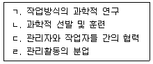
- ㄱ, ㄴ
- ㄷ, ㄹ
- ㄱ, ㄴ, ㄷ
- ㄴ, ㄷ, ㄹ
- ㄱ, ㄴ, ㄷ, ㄹ
(정답률: 27%)
7. 카츠(R. L. Katz)가 제시한 경영자의 기술에 관한 설명으로 옳은 것을 모두 고른 것은?
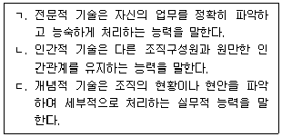
- ㄱ
- ㄴ
- ㄱ, ㄴ
- ㄱ, ㄷ
- ㄱ, ㄴ, ㄷ
(정답률: 34%)

8. 기업 외부의 개인이나 그룹과 접촉하여 외부환경에 관한 중요한 정보를 얻는 활동은?
- 광고
- 예측활동
- 공중관계(PR)
- 활동영역 변경
- 경계연결(boundary spanning)
(정답률: 34%)
9. 조직의 목표를 달성하기 위하여 조직구성원들이 담당해야 할 역할 구조를 설정하는 관리과정의 단계는?
- 계획
- 조직화
- 지휘
- 조정
- 통제
(정답률: 40%)
10. 캐롤(B. A. Carroll)이 주장한 기업의 사회적 책임 중 책임성격이 의무성 보다 자발성에 기초하는 것을 모두 고른 것은?
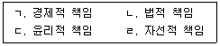
- ㄱ, ㄴ
- ㄴ, ㄷ
- ㄷ, ㄹ
- ㄱ, ㄴ, ㄹ
- ㄴ, ㄷ, ㄹ
(정답률: 67%)
11. 포터(M. Porter)의 산업구조분석 모형에 관한 설명으로 옳지 않은 것은?
- 산업 내 경쟁이 심할수록 산업의 수익률은 낮아진다.
- 새로운 경쟁자에 대한 진입장벽이 낮을수록 해당 산업의 경쟁이 심하다.
- 산업 내 대체재가 많을수록 기업의 수익이 많이 창출된다.
- 구매자의 교섭력은 소비자들이 기업의 제품을 선택하거나 다른 제품을 구매할 수 있는 힘을 의미한다.
- 공급자의 교섭력을 결정하는 요인으로는 공급자의 집중도, 공급물량, 공급자 판매품의 중요도 등이 있다.
(정답률: 67%)
12. 효과적인 의사소통을 방해하는 요인 중 발신자와 관련된 요인이 아닌 것은?
- 의사소통 기술의 부족
- 준거체계의 차이
- 의사소통 목적의 결여
- 신뢰성의 부족
- 정보의 과부하
(정답률: 20%)
13. 변혁적 리더십의 구성요소 중 다음 내용에 해당하는 것은?
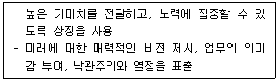
- 예외에 의한 관리
- 영감적 동기부여
- 지적 자극
- 이상적 영향력
- 개인화된 배려
(정답률: 67%)
14. 기업이 종업원에게 지급하는 임금의 계산 및 지불 방법에 해당하는 것은?
- 임금수준
- 임금체계
- 임금형태
- 임금구조
- 임금결정
(정답률: 27%)
15. 고과자가 평가방법을 잘 이해하지 못하거나 피고과자들 간의 차이를 인식하지 못하는 무능력에서 발생할 수 있는 인사고과의 오류는?
- 중심화 경향
- 논리적 오류
- 현혹효과
- 상동적 태도
- 근접오차
(정답률: 14%)
16. 산업별 노동조합 또는 교섭권을 위임받은 상급단체와 개별 기업의 사용자 간에 이루어지는 단체교섭 유형은?
- 대각선 교섭
- 통일적 교섭
- 기업별 교섭
- 공동교섭
- 집단교섭
(정답률: 47%)
17. 외부 모집과 비교한 내부 모집의 장점을 모두 고른 것은?
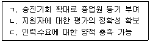
- ㄱ
- ㄴ
- ㄱ, ㄴ
- ㄴ, ㄷ
- ㄱ, ㄴ, ㄷ
(정답률: 54%)
18. 다음과 같은 장점을 지닌 조직구조는?
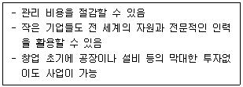
- 사업별 조직구조
- 프로세스 조직구조
- 매트릭스 조직구조
- 지역별 조직구조
- 네트워크 조직구조
(정답률: 54%)
19. 페로우(C. Perrow)의 기술분류 유형 중 과업다양성과 분석가능성이 모두 낮은 유형은?
- 일상적 기술
- 비일상적 기술
- 장인기술
- 공학기술
- 중개기술
(정답률: 47%)
20. 마일즈(R. Miles)와 스노우(C. Snow)의 전략 유형 중 유연성이 높고 분권화된 학습지향 조직구조로 설계하는 것이 적합한 전략은?
- 반응형 전략
- 저원가 전략
- 분석형 전략
- 공격형 전략
- 방어형 전략
(정답률: 27%)
21. 핵심자기평가(core self-evaluation)가 높은 사람들은 자신을 가능성 있고, 능력 있고, 가치있는 사람으로 평가한다. 핵심자기평가의 구성요소를 모두 고른 것은?
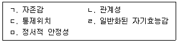
- ㄱ, ㄴ, ㄷ
- ㄱ, ㄴ, ㅁ
- ㄱ, ㄴ, ㄹ, ㅁ
- ㄱ, ㄷ, ㄹ, ㅁ
- ㄴ, ㄷ, ㄹ, ㅁ
(정답률: 34%)
22. 킬만(T. Kilmann)의 갈등관리 유형 중 목적달성을 위해 비협조적으로 자기 관심사만을 만족시키려는 유형은?
- 협력형
- 수용형
- 회피형
- 타협형
- 경쟁형
(정답률: 54%)
23. 다음에서 설명하는 제품수명주기의 단계는?
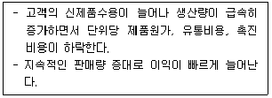
- 도입기
- 성장기
- 성숙기
- 정체기
- 쇠퇴기
(정답률: 67%)
24. 4P 중 가격에 관한 설명으로 옳지 않은 것은?
- 가격은 다른 마케팅믹스 요소들과 달리 상대적으로 쉽게 변경할 수 있다.
- 구매자가 가격이 비싼지 싼지를 판단하는 기준으로 삼는 가격을 준거가격이라 한다.
- 구매자가 어떤 상품에 대해 지불할 용의가 있는 최저가격을 유보가격이라 한다.
- 가격변화를 느끼게 만드는 최소의 가격변화 폭을 JND(just noticeable difference)라 한다.
- 구매자들이 가격이 높은 상품일수록 품질도 높다고 믿는 것을 가격-품질 연상이라 한다.
(정답률: 54%)
25. 판매촉진의 수단 중 소비자들의 구입가격을 인하시키는 효과를 갖는 가격수단의 유형을 모두 고른 것은?
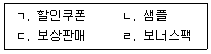
- ㄱ, ㄴ
- ㄷ, ㄹ
- ㄱ, ㄴ, ㄷ
- ㄱ, ㄷ, ㄹ
- ㄱ, ㄴ, ㄷ, ㄹ
(정답률: 54%)
26. 브랜드에 관한 설명으로 옳지 않은 것은?
- 브랜드는 제품이나 서비스와 관련된 이름, 상징, 혹은 기호로서 그것에 대해 구매자가 심리적인 의미를 부여하는 것이다.
- 브랜드 자산은 소비자가 브랜드에 부여하는 가치, 즉 브랜드가 창출하는 부가가치를 말한다.
- 켈러(J. Keller)에 따르면, 브랜드 자산의 원천은 브랜드의 인지도와 브랜드의 이미지이다.
- 브랜드 이미지는 긍정적이고 독특하며 강력해야 한다.
- 브랜드 개발은 창의적인 광고를 통해 관련 이미지를 만들어내는 것이다.
(정답률: 34%)
27. 금년 초에 5,000원의 배당(=d0)을 지급한 A기업의 배당은 매년 영원히 5%로 일정하게 성장할 것으로 예상된다. 요구수익률이 10%일 경우 이 주식의 현재가치는?
- 50,000원
- 52,500원
- 100,000원
- 1⑤,000원
- 110,000원
(정답률: 20%)
28. 자본시장선(CML)과 증권시장선(SML)에 관한 설명으로 옳지 않은 것은?
- 증권시장선 보다 아래에 위치하는 주식은 주가가 과대평가 된 주식이다.
- 자본시장선은 개별위험자산의 기대수익률과 체계적 위험(베타) 간의 선형관계를 설명한다.
- 자본시장선 상에는 비체계적 위험을 가진 포트폴리오가 놓이지 않는다.
- 동일한 체계적 위험(베타)을 가지고 있는 자산이면 증권시장선 상에서 동일한 위치에 놓인다.
- 균형상태에서 모든 위험자산의 체계적 위험(베타) 대비 초과수익률(기대수익률[E(ri)]- 무위험수익률[rf])이 동일하다.
(정답률: 7%)
29. 투자안의 경제성 분석방법에 관한 설명으로 옳은 것은?
- 투자형 현금흐름의 투자안에서 내부수익률은 투자수익률을 의미한다.
- 화폐의 시간가치를 고려하는 분석방법은 순현재가치법이 유일하다.
- 순현재가치법에서는 가치가산의 원칙이 성립하지 않는다.
- 내부수익률법에서는 재투자수익률을 자본비용으로 가정한다.
- 수익성지수법은 순현재가치법과 항상 동일한 투자선택의 의사결정을 한다.
(정답률: 14%)
30. 총자산순이익률(ROA)이 20%, 매출액순이익률이 8%일 때 총자산회전율은?
- 2
- 2.5
- 3
- 3.5
- 4
(정답률: 20%)
31. 가치분석/가치공학분석에서 사용하는 브레인스토밍(brainstorming)의 주제로 옳지 않은 것은?
- 불필요한 제품의 특성은 없는가?
- 추가되어야 할 공정은 없는가?
- 무게를 줄일 수는 없는가?
- 두 개 이상의 부품을 하나로 결합할 수 없는가?
- 제거되어야 할 비표준화된 부품은 없는가?
(정답률: 20%)
32. 최근 5개월간의 실제 제품의 수요에 대한 데이터가 주어져 있다고 할 때, 3개월 가중이동평균법을 적용하여 계산된 5월의 예측 수요 값은? (단, 가중치는 0.6, 0.2, 0.2이다.)
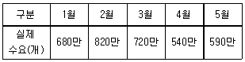
- 606만개
- 632만개
- 658만개
- 744만개
- 766만개
(정답률: 14%)
33. 공급사슬관리의 효율성을 측정하는 지표로 옳은 것은?
- 재고회전율
- 원자재투입량
- 최종고객주문량
- 수요통제
- 채찍효과
(정답률: 34%)
34. 기업에서 생산목표상의 경쟁우선순위에 해당하지 않는 것은?
- 기술
- 품질
- 원가
- 시간
- 유연성
(정답률: 34%)
35. 품질문제와 관련하여 발생하는 외부 실패비용에 해당하지 않는 것은?
- 고객불만 비용
- 보증 비용
- 반품 비용
- 스크랩 비용
- 제조물책임 비용
(정답률: 14%)
36. 회계거래 분개 시 차변에 기록해야 하는 것은?
- 선수금의 증가
- 미수수익의 증가
- 매출의 발생
- 미지급비용의 증가
- 매입채무의 증가
(정답률: 14%)
37. 재무비율에 관한 설명으로 옳지 않은 것은?
- 자산이용의 효율성을 분석하는 것은 활동성비율이다.
- 이자보상비율은 채권자에게 지급해야 할 고정비용인 이자비용의 안전도를 나타낸다.
- 유동비율은 유동자산을 유동부채로 나눈 것이다.
- 자기자본순이익률(ROE)은 주주 및 채권자의 관점에서 본 수익성비율이다.
- 재무비율분석 시 기업 간 회계방법의 차이가 있음을 고려해야 한다.
(정답률: 7%)
38. 유형자산의 취득원가에 포함되는 것은?
- 파손된 유리와 소모품의 대체
- 마모된 자산의 원상복구
- 건물 취득 후 가입한 보험에 대한 보험료
- 유형자산 취득 시 발생한 운반비
- 건물의 도색
(정답률: 27%)
39. 다음에서 설명하는 것은?
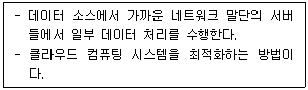
- 엣지 컴퓨팅
- 그리드 컴퓨팅
- 클라이언트/서버 컴퓨팅
- 온디멘드 컴퓨팅
- 엔터프라이즈 컴퓨팅
(정답률: 7%)
40. 비정형 텍스트 데이터의 가치와 의미를 찾아내는 빅데이터 분석기법은?
- 에쓰노그라피(ethnography) 분석
- 포커스그룹(focus group) 인터뷰
- 텍스트마이닝
- 군집 분석
- 소셜네트워크 분석
(정답률: 40%)
ㄴ. 인간적 기술(Human Skill): "다른 조직구성원과 원만한 인간관계를 유지하는 능력". 이는 타인과 소통하고, 동기를 부여하며, 협력하는 대인관계 능력을 의미하므로 정확한 설명입니다.
1. 올바른 개념적 기술(Conceptual Skill)의 정의:
**"숲을 보는 능력"**입니다. 조직을 하나의 전체 시스템으로 이해하고, 각 부분이 어떻게 서로 연결되어 영향을 미치는지 파악하는 능력입니다.
추상적이고 거시적인 사고 능력입니다. 복잡한 상황 속에서 핵심을 파악하고, 미래를 예측하며, 장기적인 전략과 비전을 수립하는 데 사용됩니다.
주로 **최고경영자(CEO, 임원)**에게 가장 중요하게 요구되는 기술입니다. 이들은 세부적인 실무보다는 조직 전체의 방향을 결정해야 하기 때문입니다.